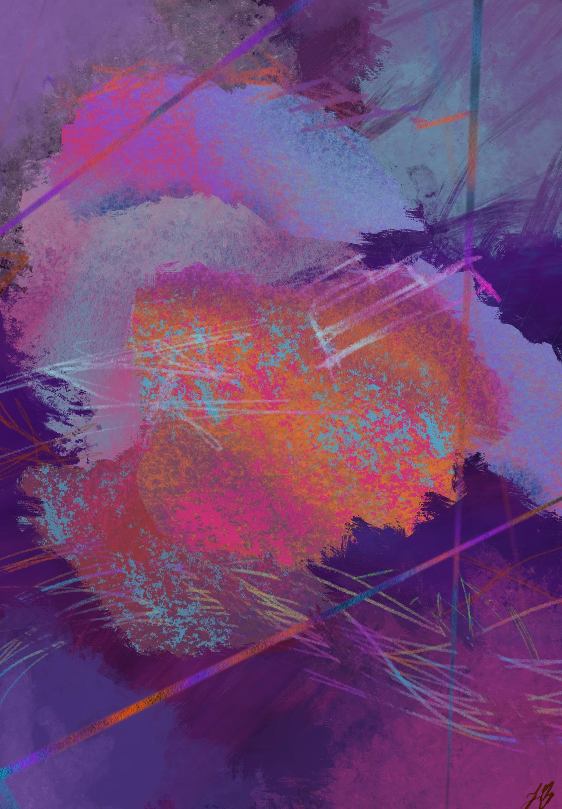

<!doctype html>
<html lang="en">
  <head>
    <meta charset="UTF-8" />
    <meta http-equiv="X-UA-Compatible" content="IE=edge" />
    <meta name="viewport" content="user-scalable=no,width=device-width,initial-scale=1" />
    <meta name="apple-mobile-web-app-capable" content="yes" />
    <title>João Barros - Portfólio 2026</title>
    <link rel="stylesheet" href="./css/styles.css" />
    <link rel="shortcut icon" type="image/x-icon" href="./images/logo-01.svg" />
    <link rel="preconnect" href="https://fonts.googleapis.com" />
    <link rel="preconnect" href="https://fonts.gstatic.com" crossorigin />
    <link
      href="https://fonts.googleapis.com/css2?family=Playfair+Display:ital,wght@0,400;0,500;0,600;0,700;0,800;0,900;1,400;1,500;1,600;1,700;1,800;1,900&family=Poppins:wght@500;600;700;800&display=swap"
      rel="stylesheet"
    />
  </head>
  <body></body>
</html>
<div id="circle-cursor">
  <svg id="mouseCircle" viewBox="0 0 100 100"><circle cx="50" cy="50" r="30" stroke="#EFE5DC" stroke-width="4" fill="#EFE5DC" /></svg>
</div>
<div id="circle-cursorGrande">
  <svg id="mouseCircle" viewBox="0 0 300 300" width="300" height="300"><circle cx="150" cy="150" r="40" stroke="#EFE5DC" stroke-width="4" fill="#EFE5DC" /></svg>
</div>
<div id="section-1" class="section">
  <div class="home" class="background">
    <nav class="nav_bar">
      <div class="nav_content">
        <a class="menu_icone" href="#"
          ><svg class="possoHover" viewBox="0 0 20 20" xmlns=" http://www.w3.org/2000/svg"><path class="possoHover" d=" M0 3h20v2H0V3zm0 7h20v2H0v-2zm0 7h20v2H0v-2z" fill="#273043" /></svg
        ></a>
      </div>
    </nav>
    <header>
      <div class="header_content"><p>2026 portfólio</p></div>
    </header>
    <main class="main_home">
      <section class="main_conteudo">
        <div class="conteudo_content">
          <p class="conteudo_grid1">joão pedro</p>
          <p class="conteudo_grid2">barros</p>
          <div class="conteudo_grid3">
            <p class="possoHover">Designer</p>
            <p>.Ux/Ui</p>
            <p>.Web</p>
            <p class="possoHover"><small>&</small> Desenvolvedor Front-end</p>
          </div>
          <div class="conteudo_grid4">
            <p class="possoHover">
              Desenvolvimento de interfaces com foco em experiência do usuário, clareza visual e consistência. Atuação em UX/UI Design aliada a execução front-end com HTML, CSS e JavaScript.
            </p>
          </div>
        </div>
        <div class="arrow">
          <svg width="50" height="50" viewBox="0 0 139 139" fill="none" xmlns="http://www.w3.org/2000/svg">
            <circle cx="69.5" cy="69.5" r="68.5" stroke="#273043" stroke-width="2" />
            <path
              id="seta"
              d="M68.9393 101.061C69.5251 101.646 70.4749 101.646 71.0607 101.061L80.6066 91.5147C81.1924 90.9289 81.1924 89.9792 80.6066 89.3934C80.0208 88.8076 79.0711 88.8076 78.4853 89.3934L70 97.8787L61.5147 89.3934C60.9289 88.8076 59.9792 88.8076 59.3934 89.3934C58.8076 89.9792 58.8076 90.9289 59.3934 91.5147L68.9393 101.061ZM68.5 39L68.5 100L71.5 100L71.5 39L68.5 39Z"
              fill="black"
            />
          </svg>
        </div>
      </section>
    </main>
    <div class="secaoAtual">
      <svg id="svg1" viewBox="0 0 100 100"><circle cx="50" cy="50" r="30" stroke="#273043" stroke-width="4" fill="#273043" /></svg>
      <svg id="svg2" viewBox="0 0 100 100"><circle cx="50" cy="50" r="30" stroke="#273043" stroke-width="4" fill="none" /></svg>
    </div>
  </div>
</div>
<div id="section-2" class="section">
  <section id="menu" class="menu_escondido">
    <div class="menu_escondidoIcone">
      <a class="menu_icone" href="#"
        ><svg class="possoHover" width="44" height="38" viewBox="0 0 44 38" fill="none" xmlns="http://www.w3.org/2000/svg">
          <path d="M6.5 20V19.5H6H1.30294L22 0.871912L42.6971 19.5H38H37.5V20V37.5H26.5V24V23.5H26H18H17.5V24V37.5H6.5V20Z" stroke="#EFE5DC" stroke-width="2" /></svg
      ></a>
    </div>
    <div class="menu_escondido_content">
      <div class="texto_link menuSobre">
        <a class="texto" href="#"><p>Sobre</p></a><a class="texto" href="#"><p>Sobre</p></a>
      </div>
      <div class="texto_link menuProjetos">
        <a class="texto menuProjetos" href="#"><p>Projetos</p></a><a class="texto" href="#"><p>Projetos</p></a>
      </div>
      <div class="texto_link menuContato">
        <a class="texto" href="#"><p>Contato</p></a><a class="texto" href="#"><p>Contato</p></a>
      </div>
    </div>
    <div class="secaoAtual">
      <svg id="svg3" viewBox="0 0 100 100"><circle cx="50" cy="50" r="30" stroke="#EFE5DC" stroke-width="4" fill="none" /></svg>
      <svg id="svg4" viewBox="0 0 100 100"><circle cx="50" cy="50" r="30" stroke="#EFE5DC" stroke-width="4" fill="none" /></svg>
    </div>
  </section>
</div>
<div id="section-3" class="section">
  <section id="sobre" class="sobre">
    <nav class="fixedMenu_navbar possoHover">
      <div class="fixedMenu_navcontent">
        <a class="texto menu_icone possoHover" href="#"><p class="possoHover">Menu</p></a><a class="texto menu_icone possoHover" href="#"><p class="possoHover">Menu</p></a>
      </div>
    </nav>
    <div class="sobre_descricaoIntro">
      <div class="sobre_descicaoParagrafos"><p>Opa! Meu nome é João Pedro :)</p></div>
      <div class="sobre_descicaoParagrafos">
        <p>Sou UX/UI Designer com background em front-end, focado em criar interfaces claras, funcionais e visualmente consistentes.</p>
      </div>
      <div class="sobre_descicaoParagrafos"><p>Formado em Design de Interação pela PUC e Mestre em Tecnologias da Inteligência e Design Digital pela PUC-SP.</p></div>
    </div>
    <div class="sobre_Ilustracao"></div>
    <div class="sobre_secaoCurriculo">
      <div class="sobre_curriculoTitulo">
        <div class="main_curriculoCurso">
          <h1>Curriculo</h1>
          
          <h3>Cursos</h3>
          <p>JavaScript - Alura<br /><span>Carga horária: 100</span></p>
          <p>Illustrator - ABRA<br /><span>Carga horária: 60</span></p>
          <p>Acessibilidade Web - Alura<br /><span>Carga horária: 16</span></p>
          <p>Front End - Alura<br /><span>Carga horária: 160</span></p>
        </div>
        <div class="sobre_curriculoConteudo">
          <h1>Curriculo</h1>
          <h1>Designer & Desenvolvedor</h1>
          <hr />
          <div class="sobre_curriculoConteudoFlex">
            <div class="-sobre_flex-1">
              <h2>UX/UI Designer</h2>
              <h2>Desenvolvedor Front-End</h2>
              <div>
                <p>Brasileiro, 24 anos</p>
                <p>Idioma: Português (Nativo), Inglês (Avançado)</p>
              </div>
              <p>
                Designer com experiência prática em UX/UI, design system e desenvolvimento front-end (HTML, CSS, JavaScript avançado). Atuei no desenvolvimento de interfaces completas para campanhas
                digitais, contribuindo na definição de layouts, KV, hierarquia de informação e melhorias contínuas baseadas em testes A/B. Experiência real na criação e ajuste de componentes em Figma,
                construção de animações e comportamentos, prototipagem e colaboração direta com copywriters e designers. Background acadêmico com mestrado em IA aplicada ao design digital.
              </p>
              <p>
                Meu objetivo profissional é atuar como UX/UI Designer, unindo experiência prática em interfaces, design system, front-end avançado e processos de UI aliados a fundamentos sólidos de
                UX. Busco participar da criação de produtos digitais claros, funcionais, escaláveis e visualmente consistentes.
              </p>
            </div>
            <div class="-sobre_flex-2">
              <h3>Habilidades Técnicas</h3>
              <p>UI Design: Figma (autolayout, componentes, prototipagem), FigJam, Miro, Adobe XD</p>
              <p>Design System: criação, manutenção, padronização de componentes e tokens visuais</p>
              <p>Ferramentas: Photoshop, Illustrator, Figma, Xd, After Effects, InDesign e Premiere</p>
              <p>Front-end Avançado: HTML, CSS, JavaScript, Sass, Gulp, Git</p>
              <p>Metodologias: Double Diamond, Design Thinking, heurísticas de Nielsen, WCAG</p>
              <p>Extras: Copywriting aplicado, Prompt Engineering, N8N e automação com IA</p>
              <h3 style="padding-top: 0">Formação</h3>
              <p>
                Mestrado em Tecnologias da Inteligência e Design Digital - PUC-SP, 2023 - 2025 Tema: Aplicações da IA generativa em processos de produção de sites e suporte ao trabalho de web
                designers.
              </p>
              <p>Bacharelado em Design de Interação - PUC-SP, 2019 - 2022</p>
            </div>
            <div class="-sobre_flex-3">
              <h3>Experiência</h3>
              <h4>Web Designer Jr. - Empiricus (Jan 2023 - Jun 2025)</h4>
              <p>
                - Criação de interfaces completas (CPL, LP, VSL, Checkout) com foco em clareza, hierarquia visual e consistência entre etapas do funil.<br /><br />- Definição colaborativa de KV,
                estrutura de página, CTAs e elementos visuais com impacto direto em engajamento e cliques.<br /><br />- Desenvolvimento e manutenção de design systems internos, incluindo padronização
                de ícones, cores, componentes e comportamentos.<br /><br />- Prototipação em Figma, com criação de variações de layout e comparação de alternativas para tomada de decisão.<br /><br />-
                Execução de testes A/B simples, comparando variações de páginas e selecionando versões de maior desempenho.<br /><br />- Participação no projeto de um formulário extenso com lógica
                condicional, definindo em conjunto fluxos alternativos, etapas reduzidas e regras de navegação.<br /><br />- Implementação de animações, carrosséis, acordeões e componentes UI com
                HTML, CSS e JavaScript avançado.<br /><br />-Colaboração constante com copywriters e designers na definição de comunicação visual e escrita.
              </p>
              <h4>Estágio Web Designer - Empiricus (2022- 2023)</h4>
              <p>
                - Apoio na criação de layouts e interfaces de campanhas.<br /><br />- Ajustes em design system, produção de elementos visuais e suporte no desenvolvimento das páginas.<br /><br />-
                Suporte em testes A/B e variações de KV.
              </p>
              <h4>Estágio Designer - Tribunal de Contas (2021- 2022)</h4>
              <p>
                - Participação no redesign da página principal, reorganizando conteúdo e estrutura visual.<br /><br />- Criação de protótipos no Figma, layouts e materiais gráficos.<br /><br />-
                Produção de ilustrações, vídeos e banners para comunicação interna e institucional.<br /><br />- Apresentação interna sobre fundamentos de UX/UI.
              </p>
            </div>
          </div>
        </div>
      </div>
    </div>
  </section>
</div>
<div id="section-4" class="section">
  <section id="projetos" class="projetos">
    <nav class="fixedMenu_navbar possoHover">
      <div class="fixedMenu_navcontent">
        <a class="texto menu_icone possoHover" href="#"><p class="possoHover">Menu</p></a><a class="texto menu_icone possoHover" href="#"><p class="possoHover">Menu</p></a>
      </div>
    </nav>
    <div class="projetos_main">
      <div class="projetos_content">
        <div class="projeto">
          <a href="https://www.behance.net/gallery/243104321/Criatum-AI-Assisted-Visual-Direction-Tool" target="_blank"
            ><div class="projeto_wrapper projeto_wrapper-wtm">
              <div class="projeto_descricao">
                <p>
                  Criatum é uma ferramenta de design assistida por IA que ajuda designers a estruturar direções visuais a partir de ideias abstratas, reduzindo a carga cognitiva no início de projetos
                  criativos.
                </p>
              </div>
            </div></a
          >
          <h1>Criatum — AI-Assisted Visual Direction Tool</h1>
        </div>
        <div class="projeto">
          <a href="https://www.behance.net/gallery/243340351/Air-Jordan-Narrative-Driven-Product-Page-Redesign" target="_blank"
            ><div class="projeto_wrapper projeto_wrapper-tcc">
              <div class="projeto_descricao projeto_descricao-tcc">
                <p>
                  Redesign conceitual da página do Air Jordan que transforma a compra em uma jornada narrativa em capítulos. Destaca a trajetória do atleta e o legado do tênis por meio de
                  microinterações em um protótipo de alta fidelidade. Projeto de TCC em Design de Interação que explora como narrativas digitais agregam valor e engajamento.
                </p>
              </div>
            </div></a
          >
          <h1>Air Jordan - Narrative-Driven Product Page Redesign</h1>
        </div>

        <!-- <div class="projeto">
          <div class="projeto_wrapper projeto_wrapper-pet">
            <h1>Pet.Buddies</h1>
            <div class="projeto_descricao">
              <p>Um projeto de aprendizagem. Foquei em design para web, utilizando um tema comum com o intuito de aplicar tecnicas de design grafico e experiência do úsuario</p>
              <p>Ferramentas: Figma e Photoshop</p>
              <p>Palavras-chave: Design Web e Ux e Ui</p>
            </div>
          </div>
        </div> -->
      </div>
    </div>
  </section>
</div>
<div id="section-5" class="section">
  <section id="contato" class="contato">
    <nav class="fixedMenu_navbar possoHover">
      <div class="fixedMenu_navcontent">
        <a class="texto menu_icone possoHover" href="#"><p class="possoHover">Menu</p></a><a class="texto menu_icone possoHover" href="#"><p class="possoHover">Menu</p></a>
      </div>
    </nav>
    <div class="contato_main">
      <div class="vamos">
        <h1>Vamos trabalhar</h1>
        <h1 class="juntos">juntos!</h1>
        <p>Espero mesmo que tenha gostado do meu trabalho e queira trabalhar junto comigo!</p>
      </div>
      <div class="segueContato">
        <p>Segue o meu contato e vou adorar receber uma mensagem sua :)</p>
        <p>e-mail: joaoppob@gmail.com</p>
        <div class="contatoIcones">
          <a href="https://www.linkedin.com/in/joaopedropombarros/" target="_blank"> </a
          ><a href="https://github.com/Joaoppob?tab=repositories" target="_blank"></a>
        </div>
      </div>
      <form class="form" action="https://formsubmit.co/joaoppob@gmail.com" method="POST">
        <p>Se você quiser me falar sobre seu projeto e mandar seu e-mail eu posso entrar em contato:</p>
        <label for="email">Email</label> <input type="email" id="email" name="email" /> <label for="mensagem">Mensagem</label> <textarea name="mensagem" id="mensagem" cols="50" rows="3"></textarea>
        <button class="submit" name="submit" type="submit">Enviar</button>
      </form>
    </div>
  </section>
</div>
<script src="./js/scripts.min.js"></script>
